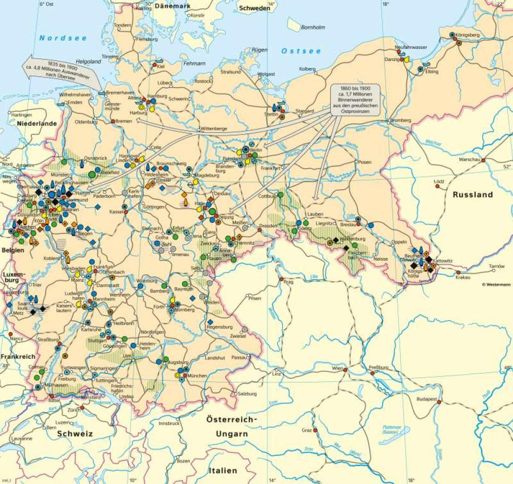
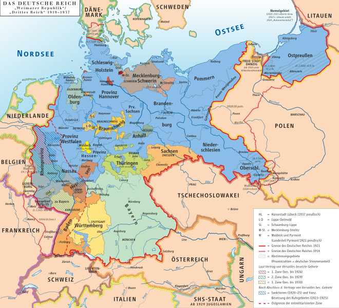
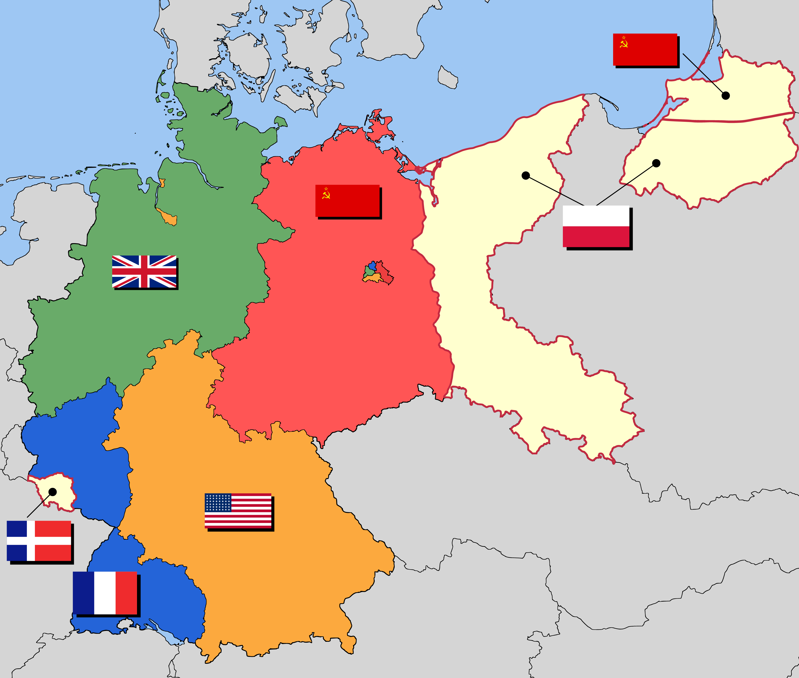
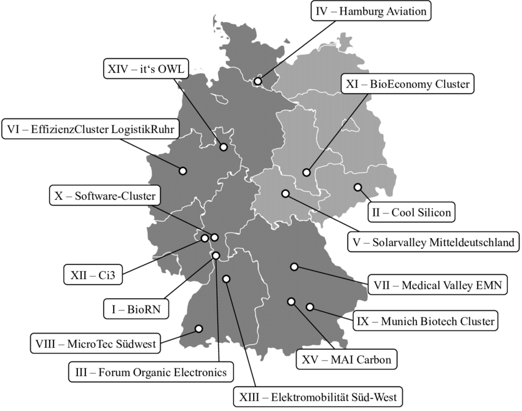
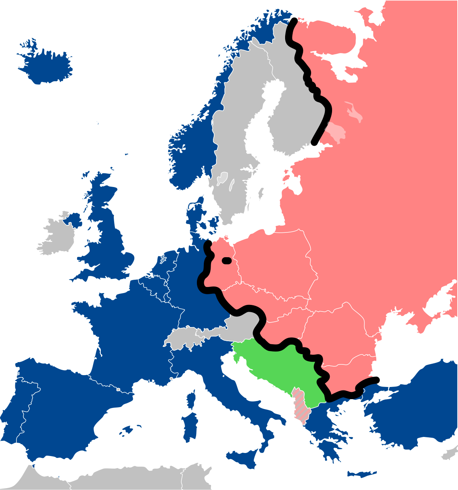
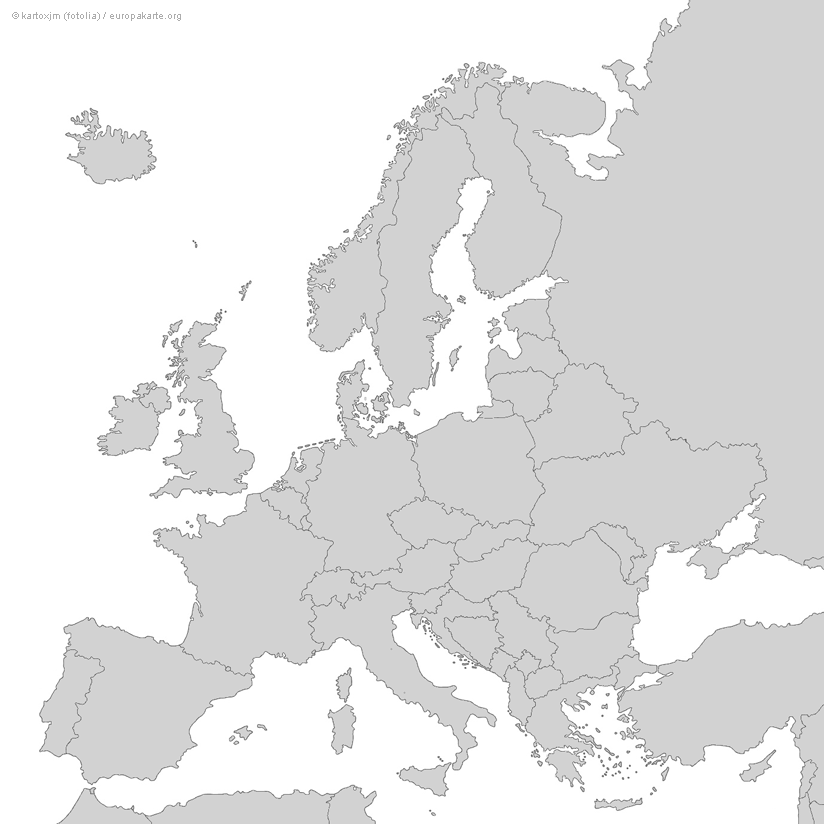
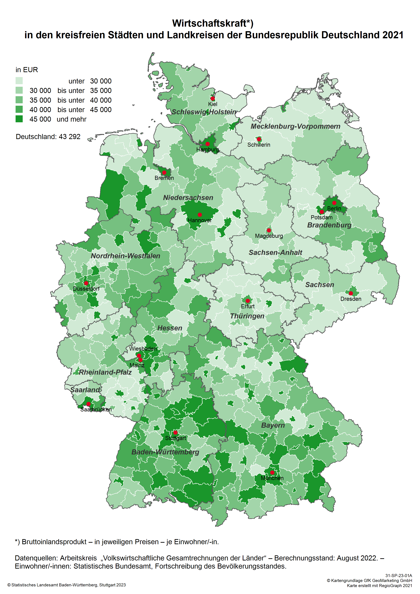
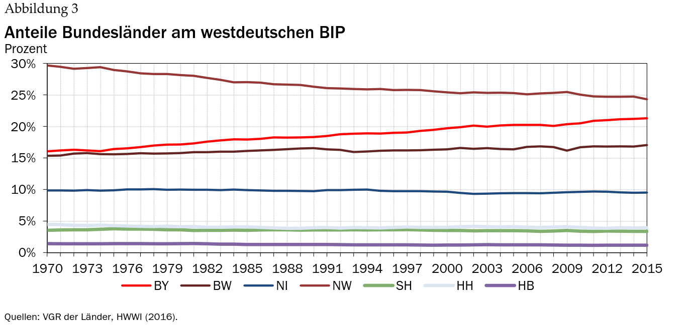
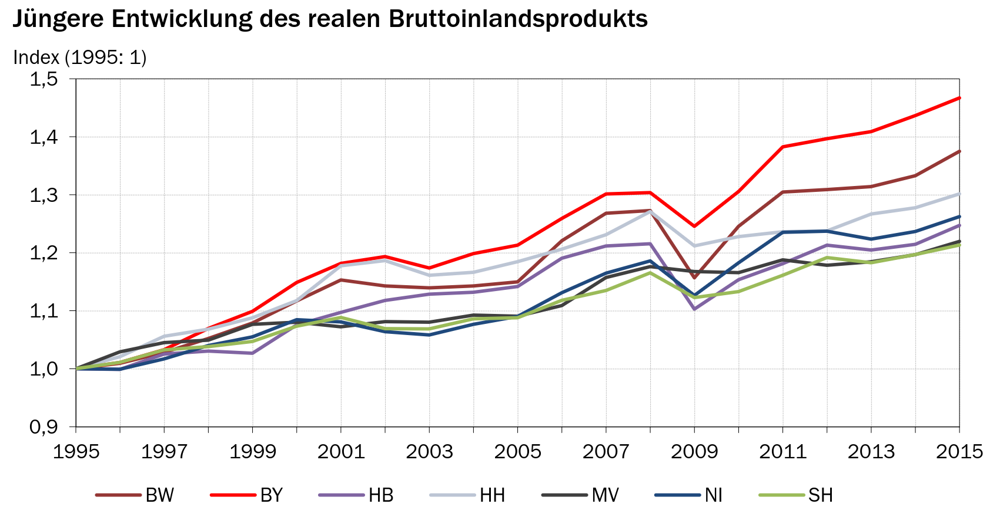
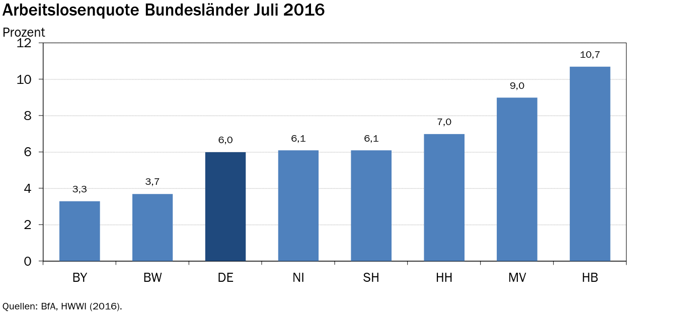

Artikel
Wirtschaftsräumliche Disparitäten in Deutschland


Agenda
- Entwicklung am Beispiel von Bayern
(Entstehung der Disparitäten) - Darstellung der heutigen Situation
- Blick in die Zukunft
Entwicklung
Industrialisierung um 1900:
- Schwerindustrie
- Fokus auf Ruhr-Gebiet
- Landwirtschaft
- Kleinhandwerk
Norden:
Süden:


Entwicklung
Beispiel Bayern
- 1960: Ärmstes Bundesland in West-Deutschland
- Heute: zweitreichstes Bundesland nach Hamburg (pro Kopf)
- NICHT monokausal
- komplexes Zusammenspiel versch. Faktoren
Ursachen:
Entwicklung
Nachkriegszeit ~1950
- 2 mio Flüchtlinge nach Bayern
- Ansiedlung in Ländlichen Gebieten
- Politik → Ausbau ländlicher und strukturschwacher Gebiete
- Fokus auf Mittelstand → Vermeidung agglomerierter Großindustrien


Entwicklung
Nachkriegszeit ~1950
- Umzug einiger Unternehmen von DDR nach BRD (Siemens, Audi) → Größeres Arbeitskräftepotenzial
- kapitalistische Tätigkieten erlaubt 😉
Entwicklung
Wirtschaftsaufschwung ~1970
- Politik → Förderung technologiespezifischer Standortcluster
- Tertiärisierung → Aufstieg der Leichtindustrie
- gestärkter Mittelstand ermöglicht modernere Industrien
- Große Industrie extremer von Ölkrise betroffen

Entwicklung
Fall des eisernen Vorhangs ~1990
- Bayern sieht sich mitten in Europa
- Ausbau der Verkehrsinfrastruktur
- Bayern als "Brücke" von Ost Nach West


Heutige Situation
Heutige Situation
- Nord-Süd Gefälle
- Ost-West Gefälle
- Cluster-Struktur in (Süd-) Deutschland
Disparitäten:
Heutige Situation
Hidden Champions:
Heutige Situation
Hidden Champions:
Heutige Situation



Gibt es Hoffung?
Blick in die Zukunft
Ist eine Beseitigung der Disparitäten möglich?
Ja!
Blick in die Zukunft
Vorteile für Norden
- Flachlandstruktur
- Meereszugang
- Zugang zu Naturfreundlichem Strom
(Südländer haben hier Nachholbedarf)
Blick in die Zukunft
Wichtige Aufgabe für die Politik
- Standortpolitik, die sich gut anpasst
- Fundamentale Entwicklungen frühzeitig erkennen (Verlangt denken über Landesgrenzen hinaus)
Blick in die Zukunft
Bildung für Weiterentwicklung wichtig
- Mehr Investments in Bildungseinrichtungen
- Errichtgung von guter Forschungsinfrastruktur
Allerdings:
- hinderliche föderative Struktur
- Zu viel Wettbewerbsgelüst
→ Planung alternativer Handlungs- und Entscheidungsmodelle essenziell!

Danke für eure/Ihre Aufmerksamkeit
Quellen:
Artikel auf Einleitungsfolie:
- https://www.mdr.de/geschichte/zeitgeschichte-gegenwart/wirtschaft/vermoegen-grunderbe-ostdeutschland-immobilien-eigenheim-ungleichheit-eigentum-100.html
- https://www.ifo.de/DocDL/sd-2019-16-ragnitz-roesel-thum-ost-west-ungleichheit-2019-08-22.pdf
- https://www.mdr.de/nachrichten/deutschland/gesellschaft/lohnunterschied-ost-west-vermoegen-ungleich-100.html
- https://www.ifo.de/DocDL/ifodb_2011_3_24_32.pdf
- https://www.rnd.de/politik/ungleichheit-zwischen-ost-und-westdeutschland-literaturwissenschaftler-warnt-vor-spaltung-der-O2C5MDMJSFBTNO33VI3JF2KWA4.html
- https://link.springer.com/chapter/10.1007/978-3-531-94213-1_5
- https://www.ifo.de/publikationen/2019/aufsatz-zeitschrift/der-graben-zwischen-ost-und-west-welche-politik-hilft-gegen
- https://www.freitag.de/autoren/pep/oekonomin-charlotte-bartels-die-luecke-hat-sich-nur-wenig-geschlossen
- https://www.bpb.de/themen/deutsche-einheit/lange-wege-der-deutschen-einheit/47091/langlebige-regionale-disparitaeten/
- https://www.iab-forum.de/das-nord-sued-gefaelle-bei-der-arbeitslosigkeit-ist-noch-staerker-als-das-ost-west-gefaelle/
- https://www.n-tv.de/wirtschaft/Deutschland-behaelt-sein-Nord-Sued-Gefaelle-article17793716.html
- https://www.statistik-bw.de/Service/Veroeff/Monatshefte/PDF/Beitrag06_06_06.pdf
- https://www.wahl.de/aktuell/2017/08/19/nord-sued-gefaelle-deutschland-wirtschaft-btw17/
- https://www.econstor.eu/bitstream/10419/146632/1/86797169X.pdf
Quellen:
Textquellen
- https://epub.sub.uni-hamburg.de/epub/volltexte/2017/66749/pdf/Policy_Paper_99.pdf
- Schroedel Westermann Geographie Bayern 12, S. 110-111
Diagramme
Quellen:
Bildquellen
- https://de.wikipedia.org/wiki/Bezirk_%28Bayern%29#/media/Datei:Locator_map_RB_in_Bavaria_colored.svg
- https://diercke.de/content/deutschland-industrie-und-verkehr-im-19%C2%A0jahrhundert-978-3-14-100380-2-209-3-1
- https://de.m.wikipedia.org/wiki/Datei:Karte_des_Deutschen_Reiches,_Weimarer_Republik-Drittes_Reich_1919%E2%80%931937.svg
- https://www.researchgate.net/figure/Leading-edge-clusters-in-Germany_fig1_319858965
- https://www.fotocommunity.de/photo/leere-autobahn-morin-grote/40817649
- https://www.europakarte.org/leere-europakarte/
- https://de.wikipedia.org/wiki/Eiserner_Vorhang#/media/Datei:Iron_Curtain_map.svg
- https://de.wikipedia.org/wiki/Tesla_Gigafactory_Berlin-Brandenburg#/media/Datei:Tesla_Gigafactory_4_DJI_20230728123435.JPG
- https://weather.com/de-DE/wissen/umwelt/news/2020-05-17-erste-windkraftanlagen-in-der-nordsee-mussen-abgebaut-werden
{kind=link}
{kind=link}
{kind=link}
{kind=link}